Candidate assignment report — Mathieu Astruc — July 2026
1. Approach overview
The pipeline is: dataset analysis → leakage-free data split → fine-tuning of a
COCO-pretrained YOLO11 → evaluation with an explicitly calibrated “no probe”
decision threshold → a self-contained inference.py. Two model sizes
(YOLO11n and YOLO11s) were trained to measure the accuracy/latency trade-off relevant
for embedded deployment.
2. What the data told us
The 308 images (640×400, grayscale, fisheye navigation camera) show dark, confined
industrial assets where the probe frequently appears as an overexposed silhouette lit by the
drone's onboard LEDs. Three findings shaped every later decision:
The images belong to 21 flights across 5 drones (parsed from the file
names). Frames within one flight are near-duplicates taken seconds apart.
Every image contains exactly one probe — there are no negative
examples, yet the system must be able to report “no probe” (Section 6).
Probe size spans 0.5%–33% of the image; positions are bimodal (probe mounted on
top or below the drone). One flight (EL300858804493_00188) contains
full-image-height boxes: the probe and its cable at extreme close range.
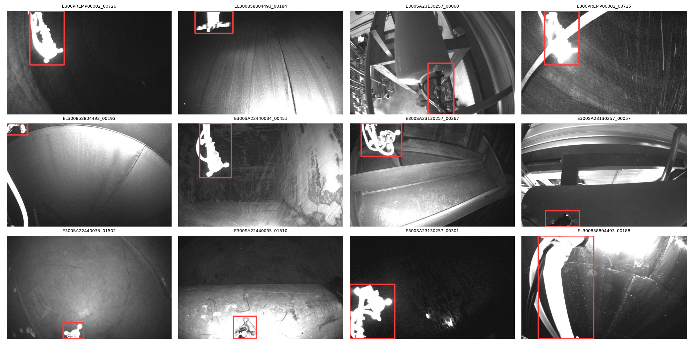
One annotated sample per flight: dark scenes, overexposed probe silhouettes,
fisheye distortion, large scale variation.
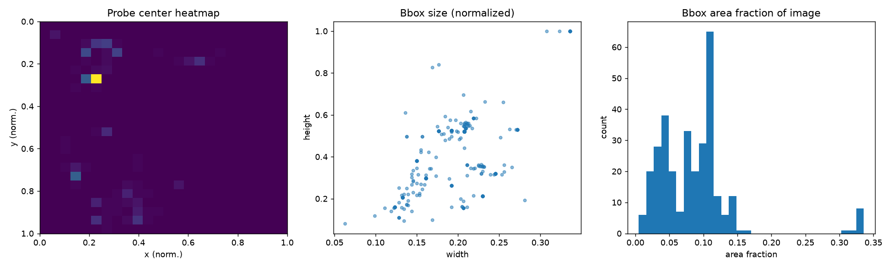
Bounding-box geometry: probe centers cluster top-left and bottom (top/bottom
mount), sizes span 0.5%–33% of the image, with a small far-right cluster of
full-height boxes (the extreme close-range flight).
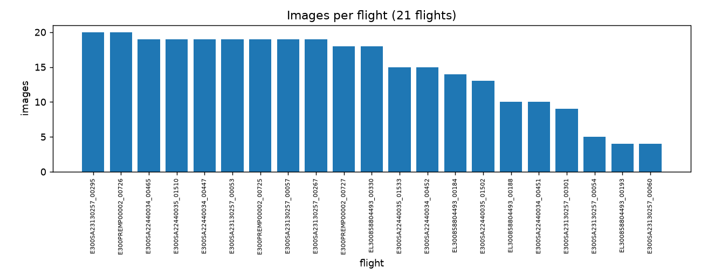
Frames per flight — the grouped train/val split operates on these 21 units.
3. System selection: YOLO11 (Ultralytics)
A single-stage detector is the right tool for a single-class, at-most-one-object task:
Faster R-CNN-style two-stage models add latency without accuracy benefit at this scale.
YOLO11 was chosen because (a) COCO-pretrained weights transfer well to a 232-image training
set, (b) the Ultralytics toolchain provides reliable training/evaluation out of the box, and
(c) it has a first-class export path (ONNX → TensorRT, FP16/INT8) to the NVIDIA Jetson
family, which matches the intended deployment target.
4. Data preparation — a leakage-free split
Annotations were converted from COCO [x, y, w, h] to YOLO
normalized format. The train/val split is done at the flight level, not the image
level: a flight's frames are near-identical, so a random image split would place
twins of training images in validation and inflate every metric. Validation flights were
picked round-robin across drones so that each of the 5 drones contributes one unseen
flight: 232 train / 76 val images (24.7%).
5. Training
Fine-tuning on Apple M5 Pro (MPS), ~25 min for YOLO11n (150 epochs), seed 42.
Hyperparameter
Value
Rationale
image size
640
native image width (letterboxed to 640×640)
epochs / patience
150 / 40
cheap epochs on 232 images; best-mAP checkpoint kept
batch / optimizer
16 / AdamW (auto LR ≈ 1.8e-3)
Ultralytics auto settings
hue/saturation jitter
0 / 0
images are grayscale — color jitter is a no-op
brightness jitter
0.4
matches real LED-lighting variability
vertical flip
0.5
the probe is physically mounted above or below the drone, so vertical flips are realistic here
horizontal flip / rotation
0.5 / ±10°
standard geometric augmentation
mosaic
on, off for last 15 epochs
strong regularizer for small datasets
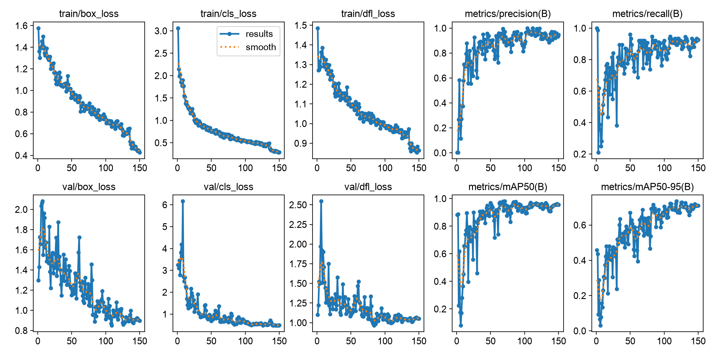
YOLO11n training curves: losses decrease smoothly and validation metrics climb
without divergence — no sign of overfitting despite the small dataset (strong augmentation
+ early stopping on the best-mAP checkpoint).
6. Results
Model
Precision
Recall
F1
mAP@0.5
mAP@0.5:0.95
mean IoU*
ms/img MPS
ms/img CPU
YOLO11n (2.6M params)
0.996
0.895
0.943
0.961
0.735
0.876
6.9 (146 fps)
18.6 (54 fps)
YOLO11s (9.4M params)
0.934
0.924
0.929
0.964
0.737
0.863
9.9 (101 fps)
33.8 (30 fps)
*mean IoU of matched detections at confidence ≥ 0.5.
Latency: single image end-to-end (pre/inference/post), 30-image average after warm-up.
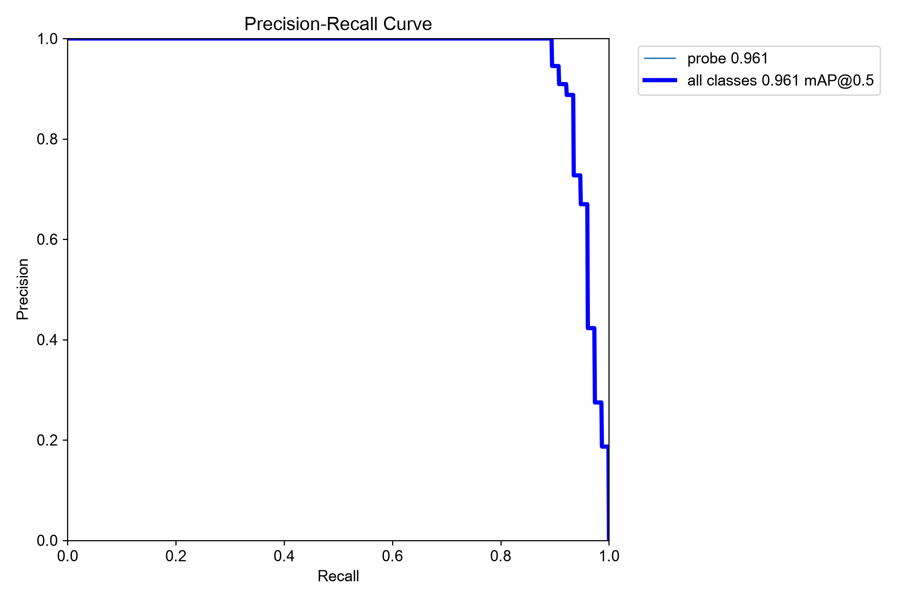
Precision–recall curve of the delivered YOLO11n: precision stays near 1.0
until recall ≈ 0.9, then drops sharply — the missed tail is the hard-case cluster
analyzed in Section 7.
The 3.6×-larger YOLO11s is not better than YOLO11n:
with 232 training images, data — not model capacity — is the bottleneck. YOLO11n is therefore
the recommended model, and the cheapest to deploy on a Jetson. All results are on a
grouped-by-flight validation set; a random split would have reported flattering but
meaningless numbers.
6.1 Calibrating the “no probe” decision
The detector reports “no probe” when no box exceeds a confidence threshold.
Since the dataset has no negative images, the false-alarm rate was measured on
synthetic negatives: for each validation image, the largest strip that does
not contain the probe was cropped, giving 76 realistic probe-free industrial backgrounds
(same camera, same lighting, same textures). Sweeping the threshold yields the operating
curve below; the chosen point (max recall subject to ≤5% false alarms) is
conf = 0.30 → 92.1% recall, 3.9% false-alarm rate, used as
the default in inference.py.
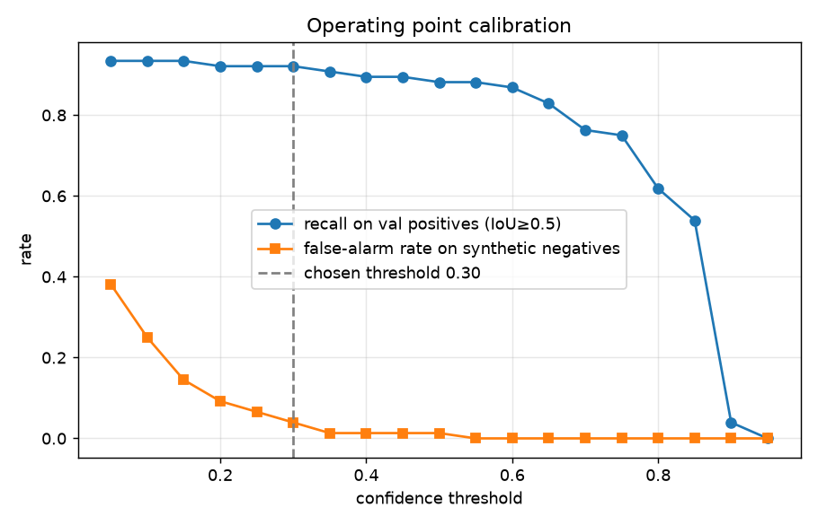
7. Analysis
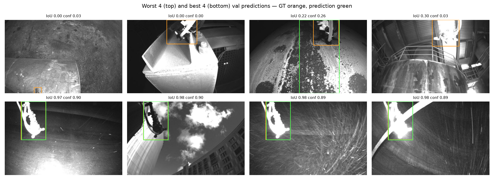
Worst 4 (top) and best 4 (bottom) validation predictions.
Ground truth orange, prediction green.
Strengths. Near-perfect precision (0.996): when the model fires, it is
right. Typical probes are localized with IoU ≈ 0.9 at confidence
≈ 0.9, including frames with heavy dust, motion streaks and blur. Runtime
(6.9 ms/image on an M-series GPU, 18.6 ms on CPU) is already real-time without any
optimization.
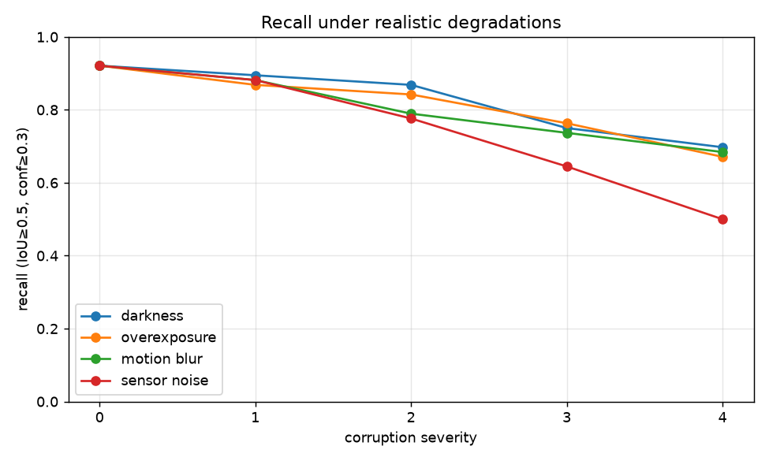
Recall under increasing synthetic degradations: graceful decline for darkness,
overexposure and motion blur — but sensor noise halves the recall at high severity, the
model's clearest weakness.
Weaknesses and trends. The missed detections follow two clear patterns:
(1) tiny, distant probes in very dark scenes (bottom-left of the worst grid) and
(2) probes in front of bright, overexposed structures, where the white-silhouette
cue the model relies on disappears. The extreme-close-range flight with full-height boxes
introduces ambiguity about the intended box extent (probe head vs. probe + cable) —
worth clarifying in the annotation guidelines. Finally, with only 76 validation images from 5
flights, all metrics carry noticeable variance; conclusions should be re-checked on a larger
validation set.
8. Future improvements
Accuracy & robustness.
Collect real negatives and hard negatives (probe-free flights, other
tools/equipment that could be confused with the probe) — the current false-alarm
estimate relies on synthetic crops, and precision against confusable objects is
untested.
Exploit temporal consistency: in the real product the input is a video
stream; a lightweight tracker (e.g. ByteTrack) over per-frame detections would smooth
out isolated misses and false alarms at near-zero cost.
Active learning loop: mine production frames where the model's
confidence is in the uncertain band (0.2–0.5), have them annotated, retrain —
the fastest way to fix the two identified failure modes.
Photometric preprocessing tuned to the sensor (histogram equalization / CLAHE) to
recover detail in over- and under-exposed regions.
Inference runtime on NVIDIA Jetson.
Export to TensorRT (via ONNX): typically 2–4× over PyTorch
on Jetson. Start with FP16 (free on Jetson tensor cores), then
INT8 with a calibration set drawn from the training images.
Reduce input resolution (640 → 512 or 416) after verifying recall on
small probes; latency scales roughly quadratically with resolution.
Keep the nano model (results show larger capacity buys nothing here);
on Orin-class boards, offload to the DLA to free the GPU.
Zero-copy preprocessing (resize/normalize on GPU, e.g. DeepStream or CUDA), and
pin the model in memory to avoid per-frame warm-up.
9. Beyond the assignment
Seven extensions were carried out to probe the system the way production would:
Flight replay demo. The file names embed capture timestamps (one frame
per 300 ms), so each validation flight was reconstructed and replayed through the
detector with the temporal logic a real onboard pipeline would use (EMA box smoothing,
2-frame hysteresis before declaring the probe lost). See
reports/demo/demo_reel.mp4.
Synthetic negative training data. The probe was erased from one frame
per training flight by inpainting (with sensor-matched noise re-injected so the patch is
not a learnable artifact), plus probe-free crops — 14% background images. The retrained
model did not beat the baseline: equal recall but a higher false-alarm rate
across the operating range. With only 32 negatives against an already-low baseline
false-alarm rate, the honest conclusion is that real probe-free flights are needed to
move this needle.
Robustness study. Recall was measured under increasing darkness,
overexposure, motion blur and sensor noise (4 severity levels each,
reports/eval_yolo11n/robustness.png). Degradation is graceful except for
sensor noise (recall 0.92 → 0.50) — an actionable
finding: add noise augmentation during training or light denoising in the deployed
preprocessing.
Self-improvement loop (temporal pseudo-labeling). Simulating a
production feedback system: a weak model trained on only 25% of the flights
pseudo-labels the remaining flights without access to their human labels,
keeping only detections that are temporally stable across neighboring frames (0.3 s
apart — physics as a free supervisor) and above a confidence threshold calibrated on
the labeled subset (essential: the under-trained model's confidences peak at ~0.014).
The auto-generated labels reach IoU 0.86 against the hidden human
annotations, and retraining on them lifts mAP@0.5 from 0.845 to 0.921 —
closing about two thirds of the gap to the fully-supervised model with
zero additional annotation. In production this means the system can
keep improving from ordinary flight footage alone.
Learning curve. The same recipe trained on nested 25/50/75/100%
subsets of the training flights (fixed validation set) shows detection presence
saturating early (mAP@0.5 = 0.951 at half the data) while localization quality is
still climbing at 100% (mAP@0.5:0.95: 0.50 → 0.62 → 0.70 → 0.74):
collecting more annotated flights would still pay, mostly in box accuracy.
Zero-install browser demo. The trained network, exported to ONNX and
packed with a WebAssembly runtime into a single self-contained HTML file
(web_demo/probe_demo.html): drop any image on it and the detector runs
locally in the browser — a stricter deployment environment than a Jetson.
Deployment benchmark. ONNX export (the graph a Jetson TensorRT engine
consumes) plus int8 dynamic quantization: the model shrinks 10.6 → 3.0 MB
(3.5×) with detections preserved (best confidence 0.870 → 0.866, box
center shift 0.1 px). Int8 gave no CPU speed-up on the development machine — the
latency gains materialize on Jetson tensor cores, which is where FP16/INT8 TensorRT
engines would be built.
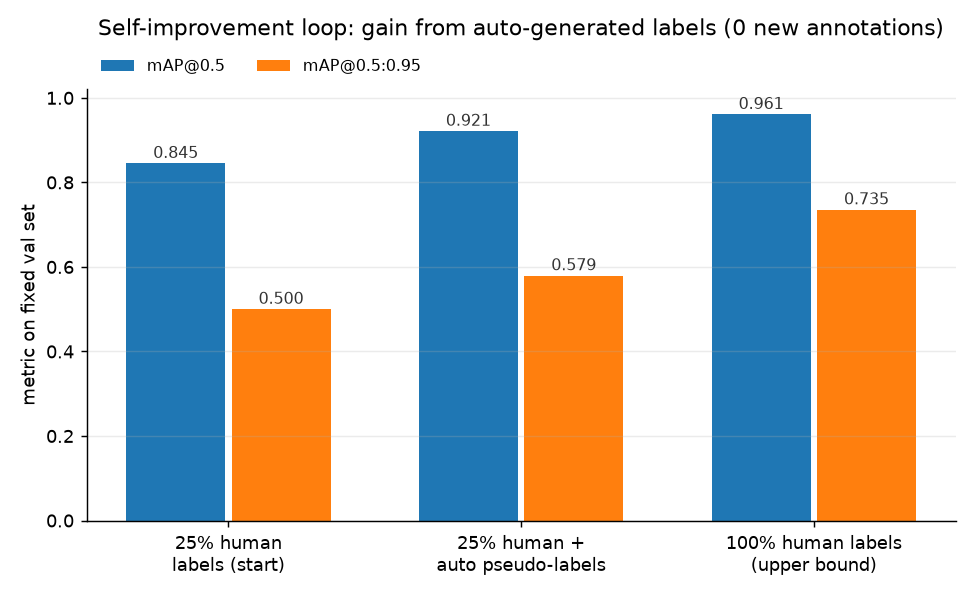
Self-improvement loop: temporally-filtered pseudo-labels (auto-generated,
IoU 0.86 vs the hidden human annotations) close about two thirds of the mAP@0.5 gap to
full supervision without any new annotation.
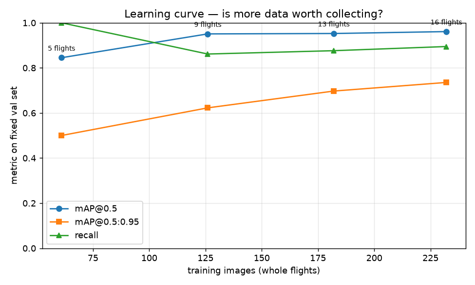
Learning curve on nested flight subsets: detection presence (mAP@0.5)
saturates by ~50% of the data, while localization quality (mAP@0.5:0.95) is still climbing
at 100% — more annotated flights would still pay. (The recall point at 25% is a
calibration artifact of the under-trained model, not a real regression.)
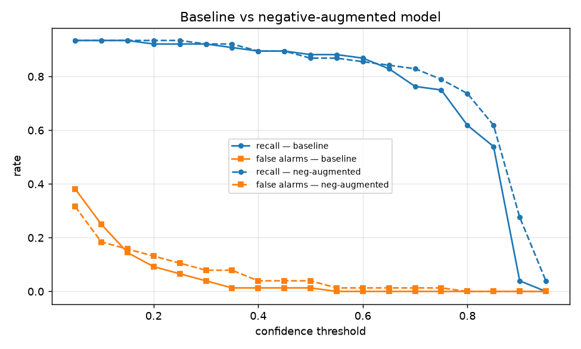
Negative-augmentation experiment: across the threshold range the baseline
matches the retrained model's recall with equal or fewer false alarms — the honest
conclusion is to keep the baseline.
10. Deliverables
inference.py — folder in, annotated images out (or window display),
explicit “NO PROBE DETECTED” notification, detections.json.
weights/probe_yolo11n.pt (recommended) and probe_yolo11s.pt.
Training/evaluation/data-prep code: train.py, evaluate.py,
scripts/. Run instructions in README.md.